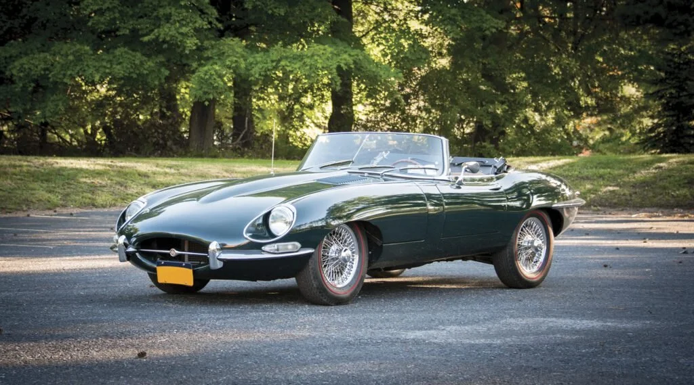
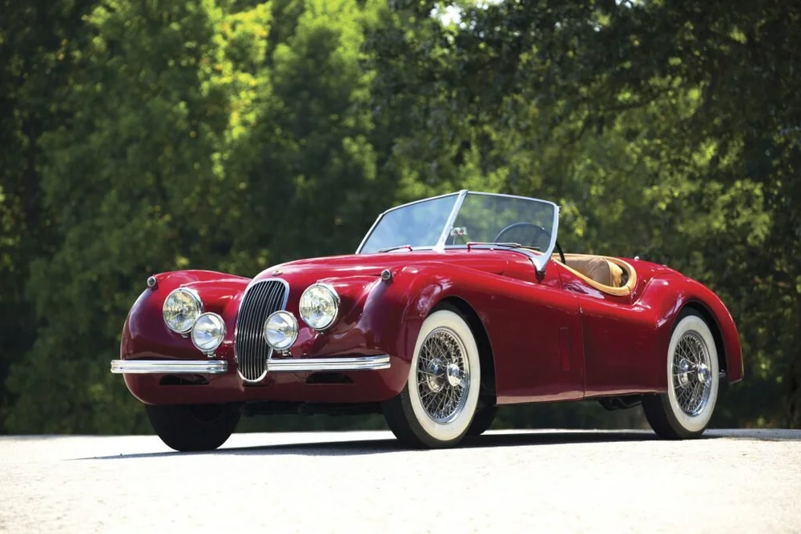
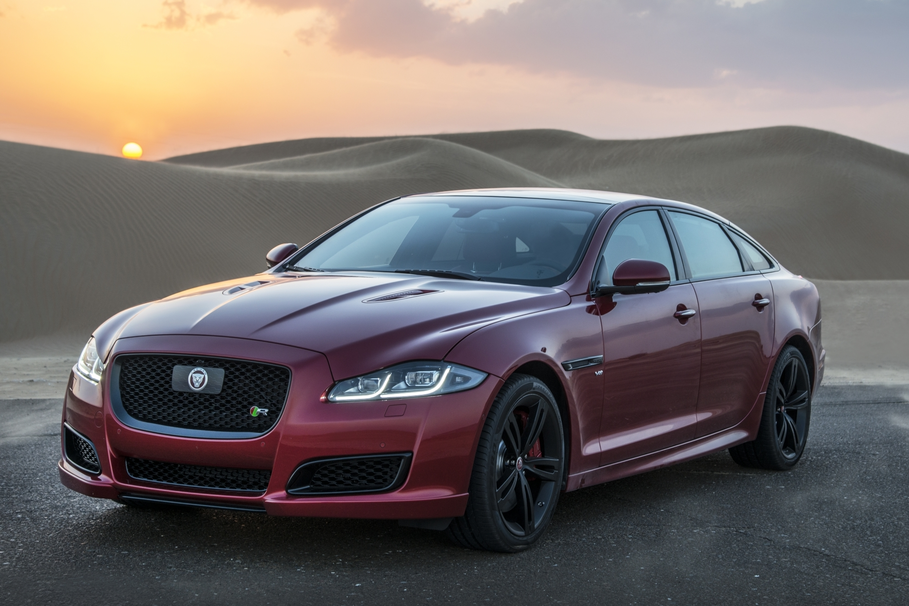
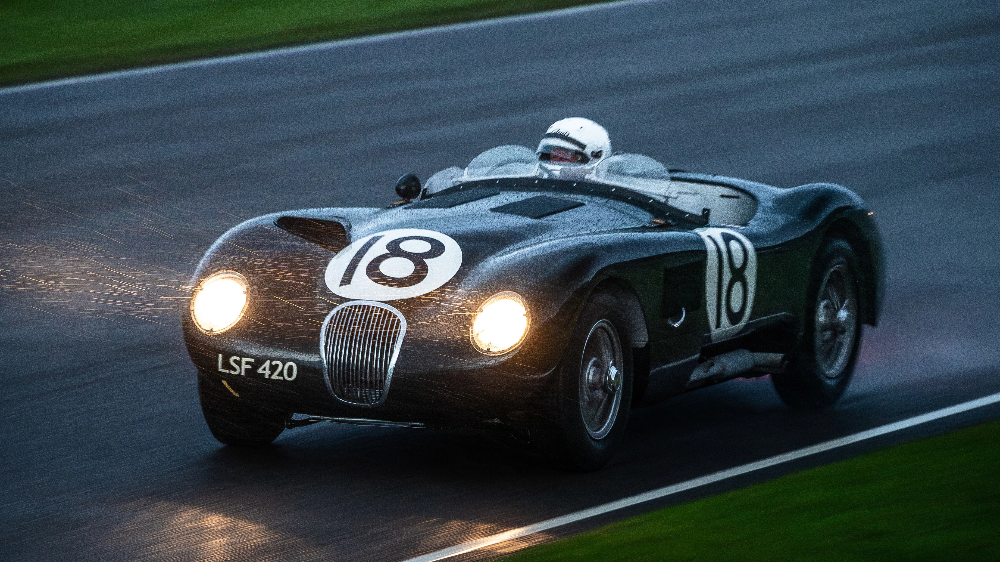
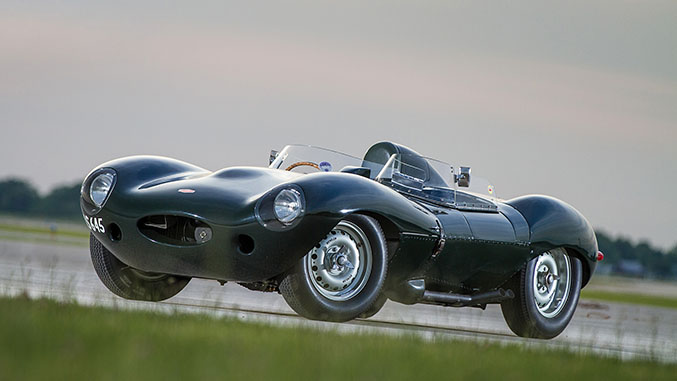
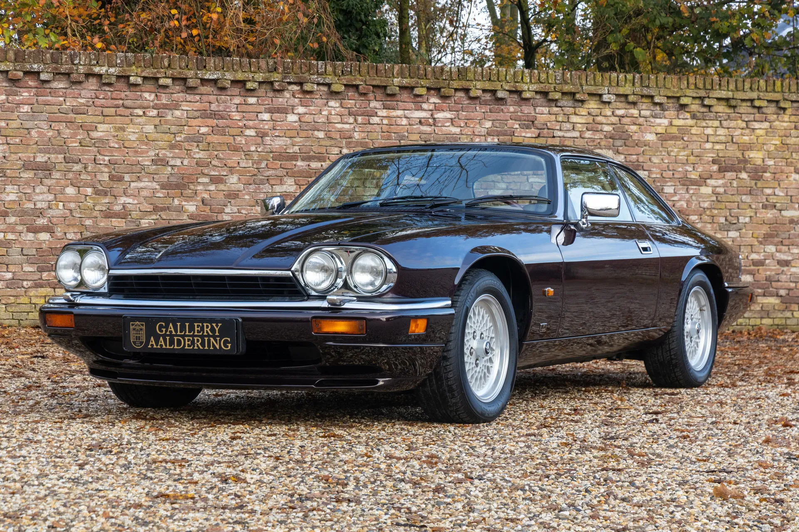
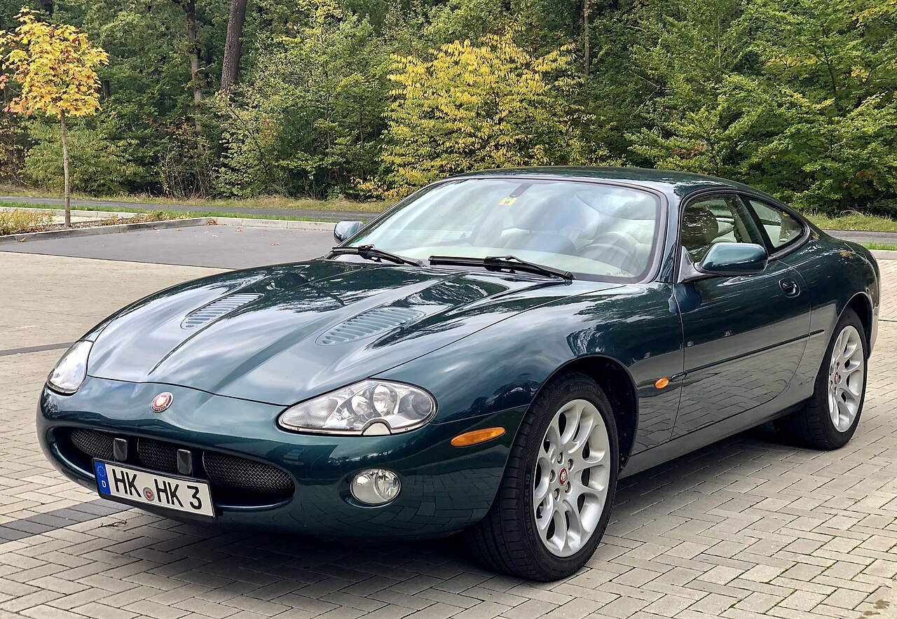
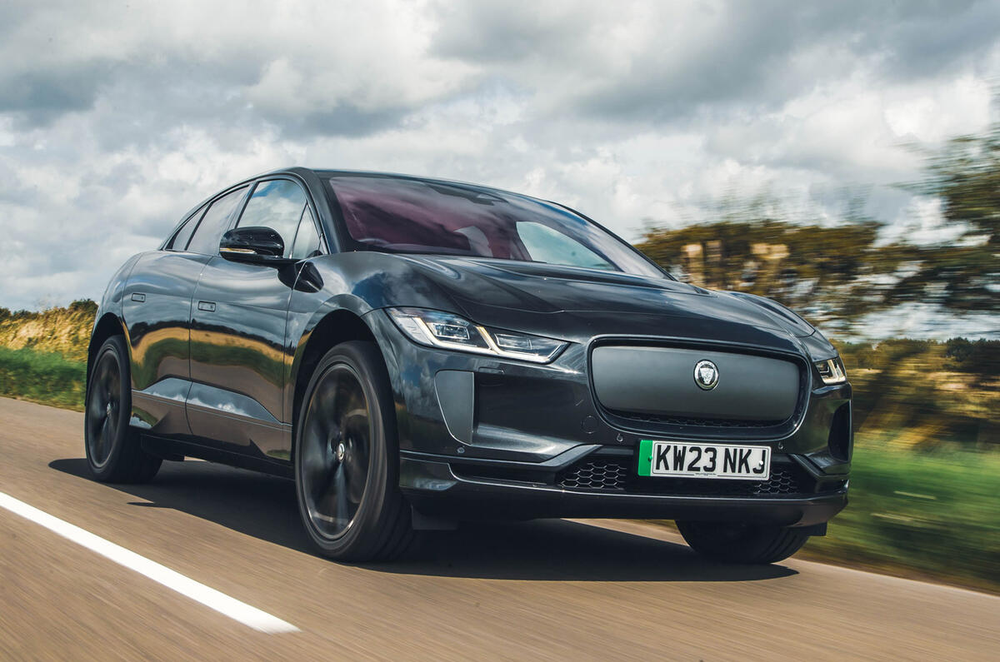
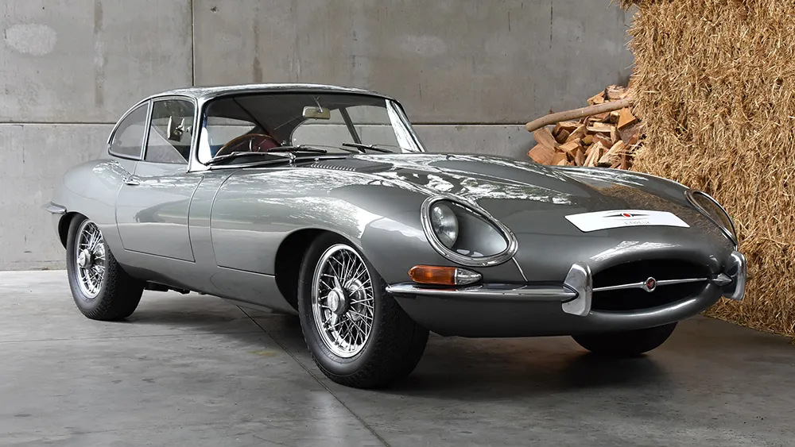
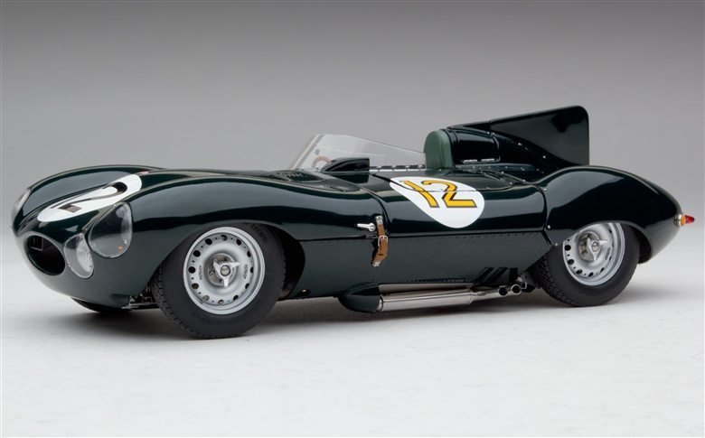

Jaguar
Grace, Space, Pace
Founded: 1922
Country: UK
Icon: E-Type
British Luxury
Grace, Space, Pace
Jaguar's story begins in 1922 when William Lyons and William Walmsley formed the Swallow Sidecar Company. They built motorcycle sidecars, then moved to car bodies. In 1935, the first car to wear the Jaguar name was the SS 100, a beautiful sports car that established the brand's reputation.
After World War II, the SS name was dropped due to Nazi connotations, and the company became Jaguar Cars Ltd. The 1948 XK120 stunned the world with its 120 mph capability – the fastest production car of its time. Its XK engine, designed by William Heynes, would power Jaguars for decades.
The 1950s brought racing success with C-Type and D-Type at Le Mans. The C-Type won in 1951, 1953; the D-Type won in 1955, 1956, 1957. Jaguar's disc brakes (pioneered on C-Type) changed racing and road cars forever.
The 1961 E-Type is arguably the most beautiful car ever made. When launched, Enzo Ferrari called it "the most beautiful car ever made." It offered 150 mph performance for less than half the price of competitors.
The 1968 XJ6 sedan defined the luxury saloon for decades – elegant, refined, and fast. Jaguar merged with British Motor Corporation to form British Leyland, then faced quality struggles in the 1970s.
Ford bought Jaguar in 1989 and invested heavily in quality and new models. The 1996 XK8 and 2001 X-Type expanded the range. Tata Motors bought Jaguar and Land Rover in 2008, merging them into Jaguar Land Rover.
Today, Jaguar is transitioning to an all-electric luxury brand, with the I-Pace leading the way. The future is electric, but the heritage of beautiful, fast British cars remains.
"The car is the closest thing we will ever create to something that is alive."- Sir William Lyons, founder

1961-1975
"The most beautiful car ever made" – Enzo Ferrari. The E-Type combined stunning looks, 150 mph performance, and everyday usability at an affordable price.

1948-1954
The fastest production car of its time. The XK engine became legendary, powering Jaguars for 40+ years.

1968-present
The definitive luxury saloon. Elegant, refined, and fast. The XJ defined Jaguar for decades.

1951-1953
Le Mans winner. First car with disc brakes. Beautiful and effective.

1954-1957
Aerodynamic Le Mans winner. Innovative monocoque construction.

1975-1996
The grand tourer of its era. V12 power, distinctive flying buttress design.

1996-2014
Modern grand tourer with V8 power. Supercharged XKR with 400+ hp.

2018-present
Electric performance SUV. World Car of the Year 2019. 292 mile range, 0-60 in 4.5 seconds.
The Jaguar E-Type (XK-E in North America) is widely considered the most beautiful car ever designed. Created by aerodynamicist Malcolm Sayer, who used aircraft design principles, the E-Type was a masterpiece of form following function.
The 3.8L E-Type did 0-60 in 6.9 seconds and 150 mph top speed – remarkable for 1961. It cost £2,097, half the price of comparable Aston Martin or Ferrari.
The E-Type is in the permanent collection of New York's Museum of Modern Art. It defined an era and remains the benchmark for beautiful sports car design.

The XJ has been Jaguar's flagship sedan since 1968. Sir William Lyons designed it himself, and its basic silhouette remained remarkably consistent for four decades.
The XJ has always offered a unique blend of luxury, performance, and style. It's the quintessential British luxury sedan.

Jaguar's Le Mans victories in the 1950s made the brand famous. The D-Type's three consecutive wins (1955-57) established Jaguar as a racing powerhouse. The C-Type was the first car to use disc brakes, which changed motorsport and road cars forever.
The XJR series of Group C cars dominated sports car racing in the late 1980s, winning Le Mans twice.
